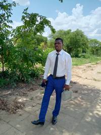

Nyashadzashe Gumboguru | WDD 130

Hi, my name is Nyashadzashe Gumboguru, and I’m a 25-year-old software engineering student at BYU–Idaho,
proudly from Zimbabwe.
I’m passionate about using technology to solve real-world problems. Whether it's building websites or
developing mobile apps, I love creating practical solutions that make life simpler and more
connected.
Recently, I launched my own micro-company called Access Soft Labs (ASL) a growing team
focused on building smart, custom applications and websites that meet the unique needs of individuals, small
businesses, and organizations.
I’m not married yet, but I’m fully committed to growing both personally and professionally. This journey
with ASL and my studies is something I’m truly excited about, and I look forward to learning, creating, and
making a meaningful impact alongside others who share the same passion for tech and innovation.